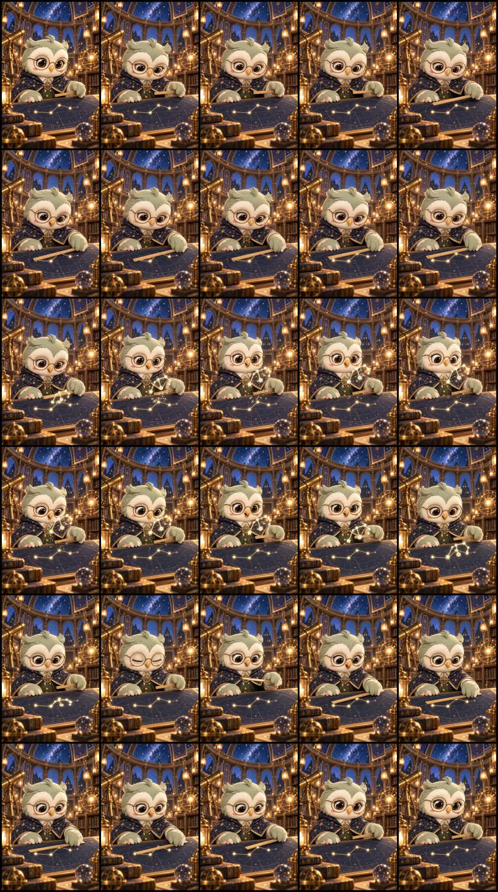

내가 이은 첫 번째 별자리
- 자를 움직여 별지도 위의 별 잇기
- 턱을 낮추고 얼굴 아래의 별자리를 눈으로 따라가기
- 별자리가 가라앉고 시작 자세로 돌아오기
시선 수정본 · 고개와 눈동자, 자·손 형태, 두 연결부를 검토했습니다. 이전 15초 영상과 비교해 보세요.
중간 연결은 8.0초 지점입니다. 두 구간을 정상 속도로 연결했으며, 역재생이나 장면 겹치기는 사용하지 않았습니다.
현재 영상 다운로드 · 세 캐릭터 프리뷰
새 영상의 0.5초 간격 장면
